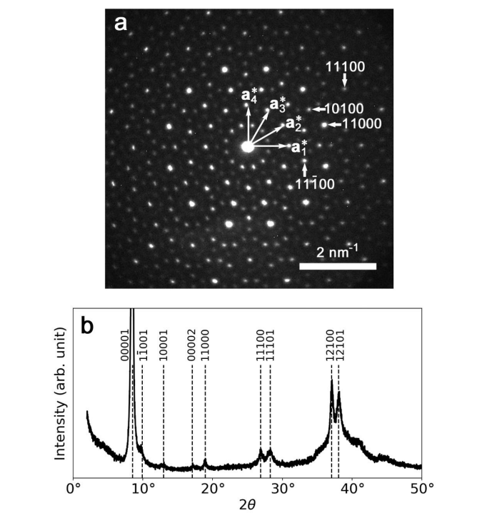
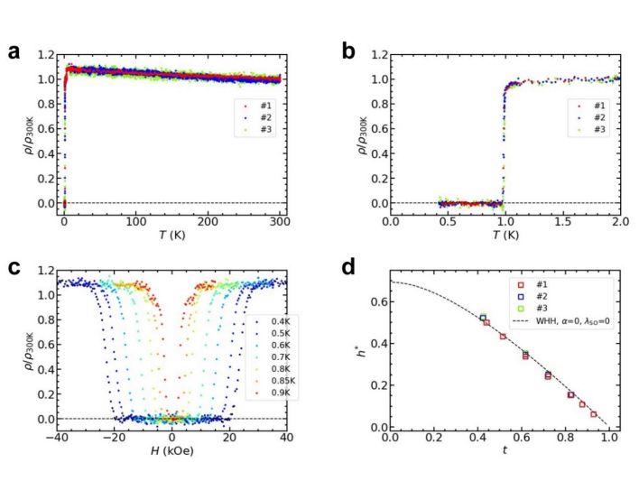

過去の注目論文：物性物理
論文紹介TOP < 物性物理 | 材料工学 | その他
物性物理：気になった論文一覧（随時更新中）
ピックアップ論文
1. ファンデルワールス準結晶の超伝導性
・反応焼結法で作製したタンタルテルル化合物のファンデルワールス準結晶（dd-QC）において、室温と常圧で電気抵抗がなくなる超伝導性を発見した。
電気抵抗、磁化率、比熱の測定から、dd-QCの超伝導転移温度は約1 Kであり、体積分率は約100%であることを確認した。これは、熱力学的に安定な準結晶で初めて観測された超伝導性である。
dd-QCの上部臨界磁場は、汚れ限界におけるWHH理論と一致し、T = 0で32 kOeと推定された。電子-フォノン結合定数は0.52と小さく、弱結合超伝導性を示した。
ファンデルワールス準結晶や二次元準結晶の物理的性質や、準結晶に期待される非常に特異な超伝導性をさらに調べることが可能になった。
コメント：準結晶でファンデルワールス結晶で超伝導とは、なんてキャッチーな論文だ。
DATE: 20 Jul 2023
Superconductivity in a van der Waals layered quasicrystal
Yuki Tokumoto et al. (The University of Tokyo, Japan)
arXiv:2307.10679 (cond-mat)
 
2. 固体の密度汎関数理論計算の精度を検証するための再現可能で普遍的なワークフローの開発
・固体の物性を予測するために広く使われている密度汎関数理論（DFT）計算の精度を検証するために、960種類の結晶構造に対して全電子（AE）計算と擬ポテンシャル（PP）計算を比較した。
・AE計算はWIEN2kとFLEURという二つのコードを用いて行い、PP計算はABINIT, BigDFT, CASTEP, CP2K, GPAW, Quantum ESPRESSO, SIESTA, SIRIUS/CP2K, VASPという九つのコードを用いて行った。
・各コードで同じ結晶構造に対して等方的な圧縮・膨張をかけてエネルギーを計算し、平衡体積（V0）、体積変化率（B0）、体積変化率の圧力微分係数（B1）という三つの熱力学的パラメータをフィッティングで求めた。
・各コードの結果とAE計算の平均値との相対誤差（ε）と不均一度（ν）という二つの指標を定義し、各コードの精度と一貫性を定量的に評価した。また、PP計算の精度を向上させるために、いくつかの元素に対して新しいPPを生成した。
・この研究はDFT計算における数値的な不確実性を制御するために重要な貢献をしている。多くのコードとPPライブラリを比較し、再現可能で普遍的なワークフローを提供している。
・この研究はEOSだけでなく、他の物性や交換相関汎関数に対しても同様な検証を行うことを推奨している。また、最適な精度と計算コストのバランスを見極めるために、新しいプロトコルや指標を開発することも提案している。
コメント：DFT計算に用いられるツールも近似法も乱立して専門家でないと追いきれない。客観的にそれらを比較することができる点が素晴らしい。
DATE: 26 May 2023
How to verify the precision of density-functional-theory implementations via reproducible and universal workflows
Emanuele Bosoni et al. (Institut de Ciencia de Materials de Barcelona, Spain)
arXiv:2305.17274 (cond-mat.mtrl-sci)


随時更新中
#ChatGPTによる要約と追加コメントを記述